Notebook 1: Does a protein cluster?#
TODO: Update the links
# /// script
# requires-python = ">=3.10"
# dependencies = [
# "matplotlib",
# "numpy",
# "scikit-image",
# "scipy",
# "tifffile",
# "imagecodecs",
# "pandas",
# "seaborn",
# "bobiac_tools @ git+https://github.com/bobiac/bobiac-tools.git"
# ]
# ///
Overview#
In this notebook, we will learn how to assess whether individual proteins are clustering.
Dataset#
Our data consists of fluorescence images with five channels:
Channel |
Staining |
Staining Description |
|---|---|---|
0 |
Hoechst |
Nuclear stain |
1 |
Phalloidin |
F-actin stain; whole cell marker |
2 |
Protein A |
Spot pattern |
3 |
Protein B |
Spot pattern |
4 |
Protein C |
Spot pattern |
0. Importing libraries#
import matplotlib.pyplot as plt
import numpy as np
import pandas as pd
import seaborn as sns
import skimage
import tifffile
from bobiac_tools import overlay_labels, ripleys_l
from scipy.spatial import KDTree
2. Load image, mask and spot table#
First, we load all the data that we will need for this notebook.
path_image = "../../../_static/images/quant/05_spatial_stats/images/F01_202.tif"
path_mask = "../../../_static/images/quant/05_spatial_stats/masks/F01_202w1.TIF"
path_spots = "../../../_static/images/quant/05_spatial_stats/spots/F01_202_spots.csv"
image = tifffile.imread(path_image)
mask = tifffile.imread(path_mask)
df_spots = pd.read_csv(path_spots)
mask = skimage.segmentation.clear_border(mask)
Visually inspect the images, masks and spots#
To be sure that the data we are working with is corrects, we visualise it here.
overlay_labels(image[2:, :, :])
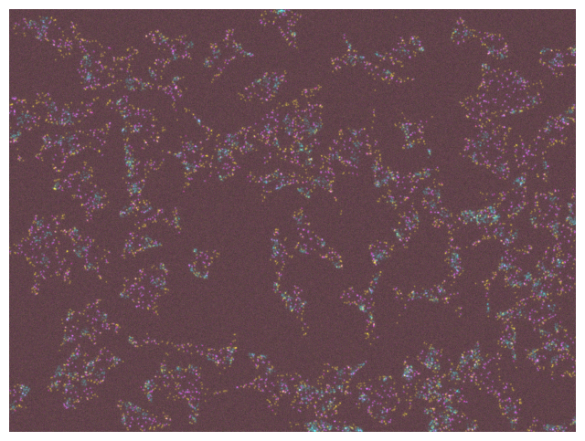
(<Figure size 800x800 with 1 Axes>, <Axes: >)
overlay_labels(label_mask=mask, coordinates=df_spots)
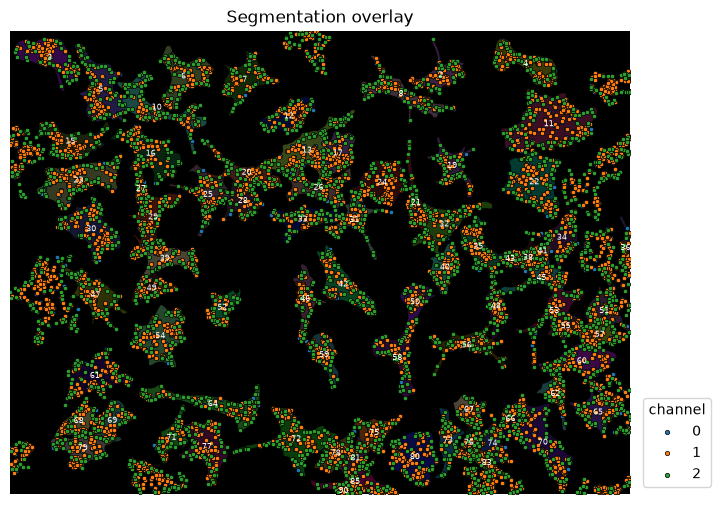
(<Figure size 800x800 with 1 Axes>,
<Axes: title={'center': 'Segmentation overlay'}>)
Using the focus attribute in overlay we can zoom in to view single objects.
overlay_labels(
image=image[2:, :, :], label_mask=mask, coordinates=df_spots, focus_object=63
)
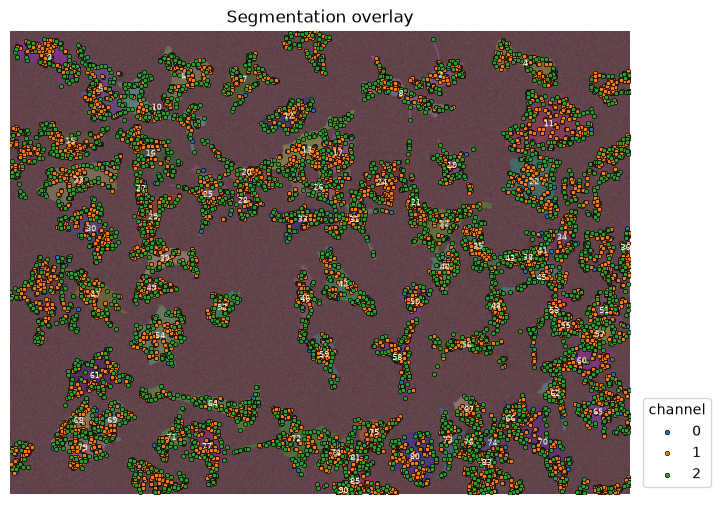
(<Figure size 800x800 with 1 Axes>,
<Axes: title={'center': 'Segmentation overlay'}>)
3. Make An Analysis Plan#
Question#
Are the spots clustered?
Approach#
To answer this question, we need to first define a reference for comparison. A common comparison is complete spatial randomness (CSR) (i.e., a fully random distribution of points). We can then define a metric that measures if a collection of points are clustered, and then use this metric to compare our dataset collection of points to a collection of random points.
Metric for Clustering#
Here, we use the average distance of each point to its nearest neighbour as the metric for clustering.
Workflow#
1. Generate a reference for comparison#
Randomly distributed set of points inside each cell’s cytoplasm. We will call this the random dataset, which we will compare to our protein dataset.
2. Measure the nearest neighbor distance#
For each spot, identify the closest spot within a cell and measure the distance.
3. Calculate the average nearest neighbour distance#
For each cell, calculate the average nearest neighbor distance for a spot.
4. Calculate the Clark-Evans Index#
The Clark-Evans Index is a ratio between the average nearest neighbour distances for the protein dataset and the random dataset. This index represents how random or clustered the dot protein distribution is. - Ratio = 1: The distribution is random - Ratio > 1: The distribution is clusered
5. Calculate the p-value of the Clark-Evans Index#
Calculate the p-value using a comparison of multiple random patterns.
To start, we focus on Protein A (Channel 2).
4. Assemble the Protein Dataset and the Random Dataset#
Protein Dataset: Map spots to cells and count spots per cell#
We need to know how many points are within each cell to place the same number of random points in the next step. If we would generate more or less random points, we would artificially measure clustering or dispersion.
First we generate a dataframe for the cells by using regionprops_table.
df_cell = pd.DataFrame(
skimage.measure.regionprops_table(mask, properties=["area", "label"])
)
print(df_cell)
area label
0 4669.0 2
1 7866.0 3
2 6945.0 4
3 9735.0 5
4 7749.0 6
.. ... ...
72 9504.0 80
73 2878.0 81
74 1881.0 83
75 4198.0 85
76 441.0 90
[77 rows x 2 columns]
Then we count the spots per cell (like in Exercise B: Nested Objects).
# map the cell label to the spots
df_spots["label_cell"] = mask[df_spots["y"].astype(int), df_spots["x"].astype(int)]
# delete spots in the background
df_spots = df_spots.loc[df_spots["label_cell"] != 0]
# count number of spots per cell label
mapping_spots = (
df_spots.loc[df_spots["channel"] == 0]["label_cell"].value_counts().reset_index()
)
# add the cell count to the cell dataframe
df_cell = df_cell.merge(
mapping_spots, left_on="label", right_on="label_cell", how="inner"
).drop(columns="label_cell")
print(df_spots)
print(df_cell)
channel y x label_cell
28 0 119 984 2
29 0 72 990 2
30 0 122 950 2
31 0 114 912 2
32 0 92 960 2
... ... ... ... ...
12607 2 1029 764 85
12670 2 1031 732 90
12671 2 1038 755 90
12672 2 1035 736 90
12673 2 1038 768 90
[10813 rows x 4 columns]
area label count
0 4669.0 2 23
1 7866.0 3 39
2 6945.0 4 34
3 9735.0 5 48
4 7749.0 6 38
.. ... ... ...
72 9504.0 80 47
73 2878.0 81 14
74 1881.0 83 9
75 4198.0 85 20
76 441.0 90 2
[77 rows x 3 columns]
overlay_labels(label_mask=mask, df=df_cell, id_col="label", measurement_col="count")
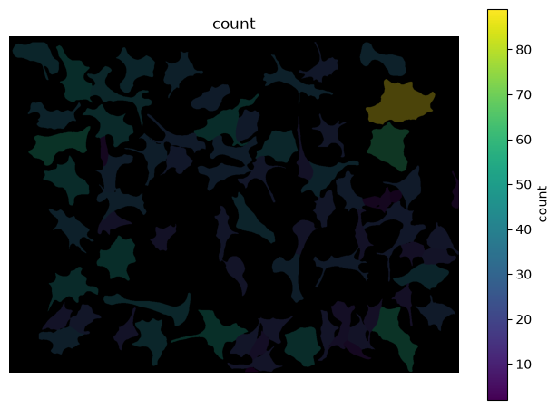
(<Figure size 800x800 with 2 Axes>, <Axes: title={'center': 'count'}>)
Random Dataset: Generate random points#
Let’s generate our first set of random points. To make it more transparent, let’s focus on a single cell first.
cell_id = 11
spots = df_spots.loc[(df_spots["channel"] == 0) & (df_spots["label_cell"] == cell_id)][
["y", "x"]
].to_numpy()
overlay_labels(label_mask=mask, coordinates=spots, focus_object=cell_id)
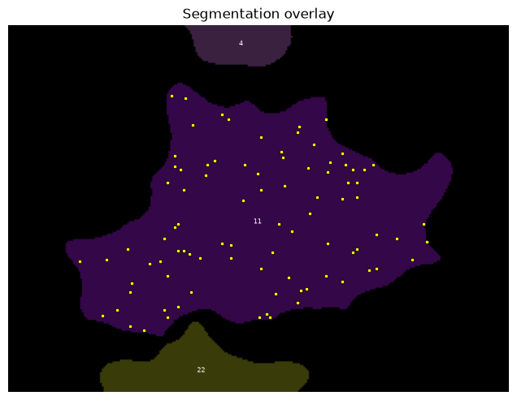
(<Figure size 800x587.05 with 1 Axes>,
<Axes: title={'center': 'Segmentation overlay'}>)
We can use a pre-written function to generate the random points. In short, what it does is:
It calculates the bounding box of the cell (the box that touches the edge of the cell at every side).
It draws random points inside that box and tests if they fall within the cell.
If not, the point is discarded.
If it is within the cell it is kept. This sequence is repeated until the cell contains the specified number of points.
This procedure is necessary since cells have irregular shapes.
# or use:
# from bobiac_tools import random_points_in_mask
def random_points_in_mask(mask: np.ndarray, cell_label: int, n: int) -> np.ndarray:
"""
Generate n random points uniformly distributed within a labeled cell region.
Points are placed continuously using rejection sampling:
candidate points are drawn uniformly from the bounding box of the cell and
accepted only if they fall within the cell mask. This correctly handles
irregular cell shapes and serves as a null model for Complete Spatial
Randomness (CSR).
Parameters
----------
mask : 2D numpy array
Label mask where each cell is identified by a unique integer ID
and background is 0.
cell_label : int
ID of the cell to sample within.
n : int
Number of random points to generate.
Returns
-------
points : (n, 2) numpy array
Random point coordinates in (row, col) / (y, x) order.
"""
ys, xs = np.where(mask == cell_label)
y_min, y_max = ys.min(), ys.max()
x_min, x_max = xs.min(), xs.max()
points = []
while len(points) < n:
y = np.random.uniform(y_min, y_max)
x = np.random.uniform(x_min, x_max)
if mask[int(round(y)), int(round(x))] == cell_label:
points.append([y, x])
return np.array(points)
Look up how many points are in our cell of interest.
n_points = df_cell.loc[df_cell["label"] == cell_id]["count"].values[0]
print(n_points)
89
Create the same number of random points inside that cell.
rnd_points = random_points_in_mask(mask, cell_label=cell_id, n=n_points)
rnd_points.shape
(89, 2)
overlay_labels(label_mask=mask, coordinates=[spots, rnd_points], focus_object=cell_id)
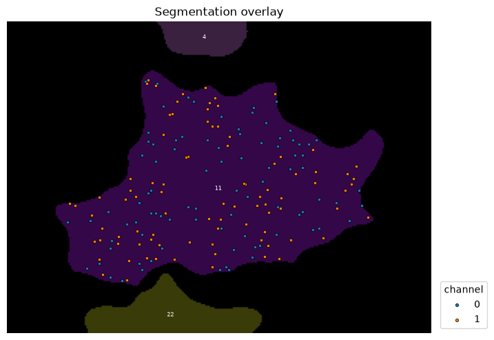
(<Figure size 800x587.05 with 1 Axes>,
<Axes: title={'center': 'Segmentation overlay'}>)
5. Calculate Nearest Neighbor Distances#
Identifying Neighbors: KD Trees#
Now that we have two sets of points, our protein dataset and the random dataset as a control, we can find the nearest neighbour of every point and calculate the distance. To find neighbors, we will use a KD tree, a spatial partitioning algorithm that identities neighbours very effectively.
The syntax for the KD tree function is a bit strange at first:
KDtree(points_A).query(points_B, k=k)
KDTree(points_A)builds the KD tree data structure..query(points_B, k=k)computes the distance to the nearest neighbors. It measures the distance from every point inpoints_Bto theknearest neighbours inpoints_A. If the two point sets are the same (like in our case), the first distance will be 0, since it is the distance from each point to itself.
# the query below returns an array of distances and an array of indices. We don't need the indicis so we assign it to the variable `_`.
dist_spots, _ = KDTree(spots).query(spots, k=2)
print(dist_spots)
[[ 0. 11.40175425]
[ 0. 5.09901951]
[ 0. 8.24621125]
[ 0. 9.8488578 ]
[ 0. 6. ]
[ 0. 8.06225775]
[ 0. 5.83095189]
[ 0. 6.32455532]
[ 0. 4.47213595]
[ 0. 13.41640786]
[ 0. 3.16227766]
[ 0. 9.89949494]
[ 0. 10.81665383]
[ 0. 14.86606875]
[ 0. 6.08276253]
[ 0. 7. ]
[ 0. 8.60232527]
[ 0. 5.09901951]
[ 0. 2.82842712]
[ 0. 9.8488578 ]
[ 0. 8.94427191]
[ 0. 3.16227766]
[ 0. 9.48683298]
[ 0. 13.15294644]
[ 0. 10.19803903]
[ 0. 15.5241747 ]
[ 0. 11.18033989]
[ 0. 8.24621125]
[ 0. 9.8488578 ]
[ 0. 11.40175425]
[ 0. 7.28010989]
[ 0. 6.08276253]
[ 0. 8.24621125]
[ 0. 10.19803903]
[ 0. 4.47213595]
[ 0. 3.60555128]
[ 0. 3.16227766]
[ 0. 5.83095189]
[ 0. 6.08276253]
[ 0. 5. ]
[ 0. 2.82842712]
[ 0. 4.47213595]
[ 0. 5.09901951]
[ 0. 10.81665383]
[ 0. 5.09901951]
[ 0. 8.54400375]
[ 0. 8. ]
[ 0. 8.06225775]
[ 0. 3.60555128]
[ 0. 15.03329638]
[ 0. 8.48528137]
[ 0. 11.66190379]
[ 0. 4.12310563]
[ 0. 2.82842712]
[ 0. 3.16227766]
[ 0. 5. ]
[ 0. 8.06225775]
[ 0. 4.47213595]
[ 0. 5.09901951]
[ 0. 5. ]
[ 0. 2.82842712]
[ 0. 12.80624847]
[ 0. 2.82842712]
[ 0. 13.41640786]
[ 0. 8.06225775]
[ 0. 11.18033989]
[ 0. 4.12310563]
[ 0. 5.09901951]
[ 0. 3. ]
[ 0. 9.21954446]
[ 0. 8.60232527]
[ 0. 13.60147051]
[ 0. 9.8488578 ]
[ 0. 5. ]
[ 0. 5. ]
[ 0. 3.16227766]
[ 0. 3.16227766]
[ 0. 4.47213595]
[ 0. 8.06225775]
[ 0. 6.32455532]
[ 0. 11.18033989]
[ 0. 10.63014581]
[ 0. 5. ]
[ 0. 8.54400375]
[ 0. 9.48683298]
[ 0. 2.82842712]
[ 0. 15.5241747 ]
[ 0. 3.60555128]
[ 0. 3. ]]
We do the same for the random spots.
# the query below returns an array of distances and an array of indices. We don't need the indicis so we assign it to the variable `_`.
dist_rnd, _ = KDTree(rnd_points).query(rnd_points, k=2)
print(dist_rnd)
[[ 0. 7.58375007]
[ 0. 7.51444025]
[ 0. 5.46539317]
[ 0. 4.44426812]
[ 0. 3.95007682]
[ 0. 5.04051509]
[ 0. 12.85178584]
[ 0. 5.46539317]
[ 0. 38.2893459 ]
[ 0. 5.87427849]
[ 0. 7.68525218]
[ 0. 4.96584377]
[ 0. 5.58648416]
[ 0. 5.87427849]
[ 0. 7.07728298]
[ 0. 6.76721058]
[ 0. 5.57023495]
[ 0. 8.51824679]
[ 0. 1.48002027]
[ 0. 3.95007682]
[ 0. 10.02372439]
[ 0. 3.80861511]
[ 0. 4.65501927]
[ 0. 4.89411638]
[ 0. 1.3033204 ]
[ 0. 6.49144589]
[ 0. 14.15598874]
[ 0. 3.74282736]
[ 0. 5.57023495]
[ 0. 9.52156343]
[ 0. 1.59261741]
[ 0. 6.05428187]
[ 0. 4.14488423]
[ 0. 9.87484208]
[ 0. 21.48087996]
[ 0. 5.94908018]
[ 0. 3.74282736]
[ 0. 3.2141619 ]
[ 0. 10.02372439]
[ 0. 6.90931503]
[ 0. 2.67855554]
[ 0. 8.86517505]
[ 0. 13.10134246]
[ 0. 14.6808373 ]
[ 0. 7.07728298]
[ 0. 7.51444025]
[ 0. 4.89411638]
[ 0. 6.46675419]
[ 0. 3.80861511]
[ 0. 5.29282784]
[ 0. 2.67855554]
[ 0. 4.14488423]
[ 0. 5.65667389]
[ 0. 11.99135009]
[ 0. 12.89646542]
[ 0. 4.65501927]
[ 0. 21.18106701]
[ 0. 12.86099506]
[ 0. 6.60149762]
[ 0. 5.04051509]
[ 0. 6.90931503]
[ 0. 5.85688199]
[ 0. 10.90878051]
[ 0. 12.24650605]
[ 0. 6.01289271]
[ 0. 1.59261741]
[ 0. 7.61452659]
[ 0. 6.49144589]
[ 0. 14.38559426]
[ 0. 6.27306801]
[ 0. 6.27306801]
[ 0. 6.02663158]
[ 0. 12.7785579 ]
[ 0. 1.3033204 ]
[ 0. 6.01289271]
[ 0. 1.48002027]
[ 0. 14.9862159 ]
[ 0. 3.2141619 ]
[ 0. 7.06429705]
[ 0. 8.19868477]
[ 0. 7.80687806]
[ 0. 5.87734528]
[ 0. 4.00038941]
[ 0. 7.53736036]
[ 0. 4.00038941]
[ 0. 5.87734528]
[ 0. 13.94530164]
[ 0. 4.50765906]
[ 0. 5.94908018]]
6. Calculate the Clark-Evans Index for the protein and random datasets#
Now, let’s calculate the mean nearest neighbour distances for both spot patterns and compare them using the Clark-Evans Index.
spot_dist_avg = dist_spots[:, 1].mean()
rnd_dist_avg = dist_rnd[:, 1].mean()
print("Mean NN distance spots:", spot_dist_avg)
print("Mean NN distance random:", rnd_dist_avg)
print("Clark-Evans index (ratio):", spot_dist_avg / rnd_dist_avg)
Mean NN distance spots: 7.382794742295512
Mean NN distance random: 7.396919620418393
Clark-Evans index (ratio): 0.9980904377973919
7. Repeat Steps 4-6 with Multiple Random Patterns#
Concept#
A single random pattern as a control dataset is not a reliable comparison because a random pattern could be clustered by chance. To account for this possibility, we repeat this procedure with additional random patterns.
n_repeats = 10
list_rnd_dist = [] # this list holds the average NN distances of the random points for each run
for _i in range(n_repeats):
rnd_points = random_points_in_mask(mask, cell_label=cell_id, n=n_points)
dist_rnd, _ = KDTree(rnd_points).query(rnd_points, k=2)
rnd_dist_avg = dist_rnd[:, 1].mean()
list_rnd_dist.append(rnd_dist_avg)
rnd_dist_avg = np.array(list_rnd_dist).mean()
clark_evans = spot_dist_avg / rnd_dist_avg
print("Mean NN distance spots:", spot_dist_avg)
print(f"Mean NN distance random ({n_repeats} runs):", rnd_dist_avg)
print(f"Clark-Evans index ({n_repeats} runs):", clark_evans)
Mean NN distance spots: 7.382794742295512
Mean NN distance random (10 runs): 7.551103415323377
Clark-Evans index (10 runs): 0.9777107180539578
Can we trust this metric now? A little more, but it would be great to have a p-value. We can calculate the p-value by asking ‘In what fraction of the runs was the observed NN distance smaller than random?’.
runs_rnd_smaller = np.array(list_rnd_dist) <= spot_dist_avg
print(runs_rnd_smaller)
[False False False False False True True True False False]
The fraction of Trues in this list is our p-value.
Clustered spots → NND_observed is small → most simulations produce a larger NND → few simulations have NND_sim ≤ NND_obs → p close to 0
Random spots → NND_observed is typical → roughly half the simulations fall below it → p ≈ 0.5
pval = runs_rnd_smaller.mean()
print("p-value for CE index:", pval)
p-value for CE index: 0.3
8. Repeat Measurements for All Cells#
So far, we have focussed on one single cell. Of course, we need to analyse all cells.
✍️ Exercise: Summarise the per-cell clustering analysis as a function#
To make processing individual cells simpler, we can summarise our above analysis in a function called nn_dist.
The function should have the following features:
Parameters:
spots : (n, 2) numpy array Spot coordinates in (row, col) / (y, x) order.
mask : 2D numpy array Label mask where each cell is identified by a unique integer ID.
cell_id : int ID of the cell in mask that spots belong to.
n_repeats : int Number of CSR simulations to run.
Returns
spot_dist_avg : float Mean nearest-neighbor distance of the observed spots.
rnd_dist_avg : float Mean of the per-simulation mean nearest-neighbor distances under CSR.
clark_evans : float Clark-Evans index: spot_dist_avg / rnd_dist_avg.
p_value : float Fraction of CSR simulations with mean NND <= spot_dist_avg.
# or use:
# from bobiac_tools import nn_dist
def nn_dist(
spots: np.ndarray, mask: np.ndarray, cell_id: int, n_repeats: int
) -> tuple[float, float, float, float]:
"""
Test whether spots in a cell are randomly distributed using nearest-neighbor
distances and a Monte Carlo simulation of Complete Spatial Randomness (CSR).
For each simulation run, n_repeats random point patterns are generated inside
the cell mask and their mean nearest-neighbor distance is computed. The
Clark-Evans index (observed / random NND) and a Monte Carlo p-value are
derived from this null distribution.
Parameters
----------
spots : (n, 2) numpy array
Spot coordinates in (row, col) / (y, x) order.
mask : 2D numpy array
Label mask where each cell is identified by a unique integer ID.
cell_id : int
ID of the cell in mask that spots belong to.
n_repeats : int
Number of CSR simulations to run.
Returns
-------
spot_dist_avg : float
Mean nearest-neighbor distance of the observed spots.
rnd_dist_avg : float
Mean of the per-simulation mean nearest-neighbor distances under CSR.
clark_evans : float
Clark-Evans index: spot_dist_avg / rnd_dist_avg.
< 1 indicates clustering, > 1 indicates dispersion.
p_value : float
Fraction of CSR simulations with mean NND <= spot_dist_avg.
Small values (< 0.05) indicate significant clustering.
"""
n_points = spots.shape[0]
dist_spots, _ = KDTree(spots).query(spots, k=2)
spot_dist_avg = dist_spots[
:, 1
].mean() # k=2: column 0 is self, column 1 is nearest neighbor
list_rnd_dist = []
for _i in range(n_repeats):
rnd_points = random_points_in_mask(mask, cell_label=cell_id, n=n_points)
dist_rnd, _ = KDTree(rnd_points).query(rnd_points, k=2)
rnd_dist_avg = dist_rnd[:, 1].mean()
list_rnd_dist.append(rnd_dist_avg)
rnd_dist_avg = np.array(list_rnd_dist).mean()
clark_evans = spot_dist_avg / rnd_dist_avg
pval = (np.array(list_rnd_dist) <= spot_dist_avg).mean()
return (
spot_dist_avg,
rnd_dist_avg,
clark_evans,
pval,
)
nn_dist(spots, mask, cell_id, 100)
(np.float64(7.382794742295512),
np.float64(7.50128551459793),
np.float64(0.9842039378354779),
np.float64(0.42))
channel = 0
n_repeats = 10
results = []
for _, row in df_cell.iterrows():
# get the spots for channel 0 and the current cell
spots_in_cell = df_spots[
(df_spots["label_cell"] == row["label"]) & (df_spots["channel"] == channel)
][["y", "x"]].values
# calculate the NN distance, Clark-Evans index and p-value for that cell
results.append(nn_dist(spots_in_cell, mask, row["label"], n_repeats=n_repeats))
df_cell[["nnd_observed", "nnd_random", "clark_evans", "p_value"]] = results
df_cell
| area | label | count | nnd_observed | nnd_random | clark_evans | p_value | |
|---|---|---|---|---|---|---|---|
| 0 | 4669.0 | 2 | 23 | 7.542691 | 8.424651 | 0.895312 | 0.3 |
| 1 | 7866.0 | 3 | 39 | 7.040435 | 7.905550 | 0.890569 | 0.1 |
| 2 | 6945.0 | 4 | 34 | 7.250944 | 7.570875 | 0.957742 | 0.2 |
| 3 | 9735.0 | 5 | 48 | 7.201960 | 7.660002 | 0.940203 | 0.2 |
| 4 | 7749.0 | 6 | 38 | 7.557600 | 7.768490 | 0.972853 | 0.2 |
| ... | ... | ... | ... | ... | ... | ... | ... |
| 72 | 9504.0 | 80 | 47 | 7.071116 | 7.751189 | 0.912262 | 0.1 |
| 73 | 2878.0 | 81 | 14 | 7.357530 | 9.123912 | 0.806401 | 0.1 |
| 74 | 1881.0 | 83 | 9 | 5.538022 | 9.109394 | 0.607946 | 0.0 |
| 75 | 4198.0 | 85 | 20 | 7.137660 | 8.431323 | 0.846565 | 0.1 |
| 76 | 441.0 | 90 | 2 | 21.377558 | 14.779611 | 1.446422 | 0.8 |
77 rows × 7 columns
df_cell.loc[df_cell["label"] == cell_id]
| area | label | count | nnd_observed | nnd_random | clark_evans | p_value | |
|---|---|---|---|---|---|---|---|
| 8 | 17915.0 | 11 | 89 | 7.382795 | 7.442827 | 0.991934 | 0.5 |
sns.histplot(
df_cell,
x="clark_evans",
)
plt.axvline(df_cell["clark_evans"].mean(), c="red", lw=10)
<matplotlib.lines.Line2D at 0x7fa2679185c0>
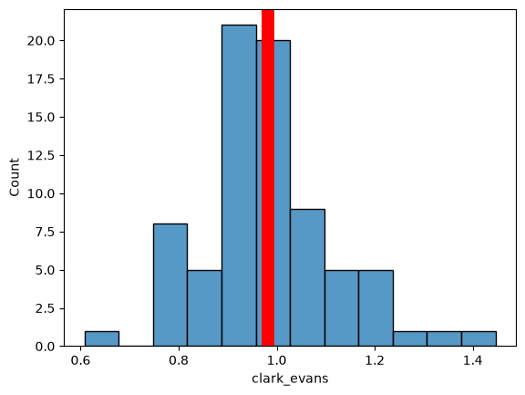
overlay_labels(
image=image[2, :, :],
label_mask=mask,
df=df_cell,
id_col="label",
measurement_col="clark_evans",
)
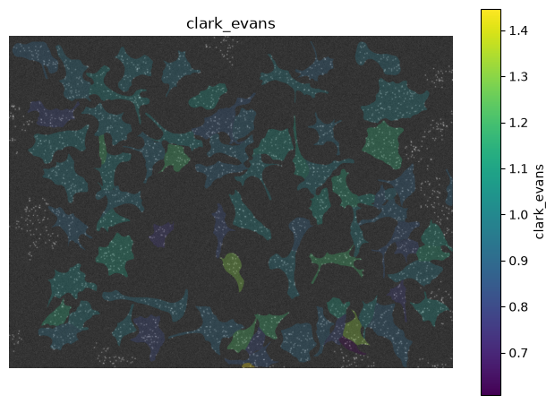
(<Figure size 800x800 with 2 Axes>, <Axes: title={'center': 'clark_evans'}>)
9. Perform the Same Calculation on the Other Channels#
Let’s use the tools we developed above to see if the spots in the other channels.
Channel 1
channel = 1
n_repeats = 10
results = []
for _, row in df_cell.iterrows():
# get the spots for channel 0 and the current cell
spots_in_cell = df_spots[
(df_spots["label_cell"] == row["label"]) & (df_spots["channel"] == channel)
][["y", "x"]].values
# calculate the NN distance, Clark-Evans index and p-value for that cell
results.append(nn_dist(spots_in_cell, mask, row["label"], n_repeats=n_repeats))
df_cell[["nnd_observed", "nnd_random", "clark_evans", "p_value"]] = results
df_cell
| area | label | count | nnd_observed | nnd_random | clark_evans | p_value | |
|---|---|---|---|---|---|---|---|
| 0 | 4669.0 | 2 | 23 | 3.854920 | 4.464964 | 0.863371 | 0.0 |
| 1 | 7866.0 | 3 | 39 | 4.270026 | 5.349347 | 0.798233 | 0.0 |
| 2 | 6945.0 | 4 | 34 | 4.445110 | 4.870329 | 0.912692 | 0.2 |
| 3 | 9735.0 | 5 | 48 | 4.891864 | 5.361681 | 0.912375 | 0.0 |
| 4 | 7749.0 | 6 | 38 | 4.489295 | 5.015529 | 0.895079 | 0.0 |
| ... | ... | ... | ... | ... | ... | ... | ... |
| 72 | 9504.0 | 80 | 47 | 4.367094 | 5.158174 | 0.846636 | 0.0 |
| 73 | 2878.0 | 81 | 14 | 3.344642 | 3.484418 | 0.959885 | 0.3 |
| 74 | 1881.0 | 83 | 9 | 2.414088 | 3.136460 | 0.769686 | 0.0 |
| 75 | 4198.0 | 85 | 20 | 3.384426 | 4.322734 | 0.782936 | 0.0 |
| 76 | 441.0 | 90 | 2 | 1.696659 | 1.594354 | 1.064167 | 0.8 |
77 rows × 7 columns
sns.histplot(
df_cell,
x="clark_evans",
)
plt.axvline(df_cell["clark_evans"].mean(), c="red", lw=10)
<matplotlib.lines.Line2D at 0x7fa26791a690>
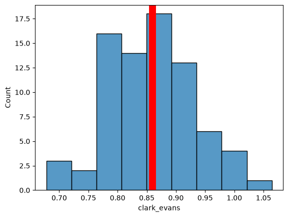
overlay_labels(
image=image[3, :, :],
label_mask=mask,
df=df_cell,
id_col="label",
measurement_col="clark_evans",
)
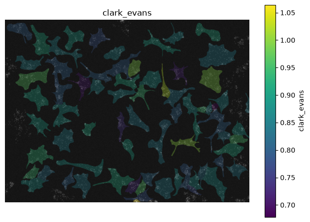
(<Figure size 800x800 with 2 Axes>, <Axes: title={'center': 'clark_evans'}>)
Channel 2
channel = 2
n_repeats = 10
results = []
for _, row in df_cell.iterrows():
# get the spots for channel 0 and the current cell
spots_in_cell = df_spots[
(df_spots["label_cell"] == row["label"]) & (df_spots["channel"] == channel)
][["y", "x"]].values
# calculate the NN distance, Clark-Evans index and p-value for that cell
results.append(nn_dist(spots_in_cell, mask, row["label"], n_repeats=n_repeats))
df_cell[["nnd_observed", "nnd_random", "clark_evans", "p_value"]] = results
df_cell
| area | label | count | nnd_observed | nnd_random | clark_evans | p_value | |
|---|---|---|---|---|---|---|---|
| 0 | 4669.0 | 2 | 23 | 6.870816 | 7.040617 | 0.975883 | 0.4 |
| 1 | 7866.0 | 3 | 39 | 7.355929 | 7.574855 | 0.971098 | 0.5 |
| 2 | 6945.0 | 4 | 34 | 6.231751 | 7.103239 | 0.877311 | 0.1 |
| 3 | 9735.0 | 5 | 48 | 6.240532 | 7.007292 | 0.890577 | 0.1 |
| 4 | 7749.0 | 6 | 38 | 6.343255 | 6.749658 | 0.939789 | 0.4 |
| ... | ... | ... | ... | ... | ... | ... | ... |
| 72 | 9504.0 | 80 | 47 | 6.363679 | 7.807400 | 0.815083 | 0.0 |
| 73 | 2878.0 | 81 | 14 | 6.751128 | 6.358954 | 1.061673 | 0.7 |
| 74 | 1881.0 | 83 | 9 | 7.651594 | 6.130065 | 1.248208 | 0.9 |
| 75 | 4198.0 | 85 | 20 | 6.427021 | 6.672263 | 0.963245 | 0.5 |
| 76 | 441.0 | 90 | 2 | 9.328427 | 6.780361 | 1.375801 | 0.9 |
77 rows × 7 columns
sns.histplot(
df_cell,
x="clark_evans",
)
plt.axvline(df_cell["clark_evans"].mean(), c="red", lw=10)
<matplotlib.lines.Line2D at 0x7fa267705550>
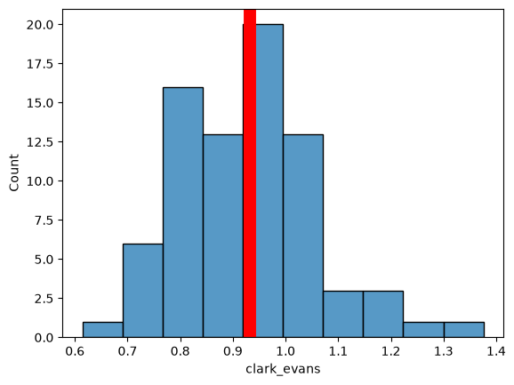
overlay_labels(
image=image[4, :, :],
label_mask=mask,
df=df_cell,
id_col="label",
measurement_col="clark_evans",
)
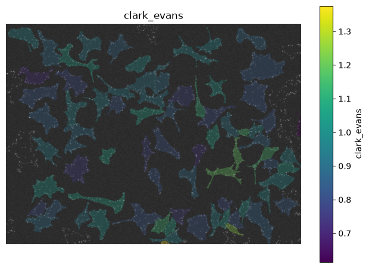
(<Figure size 800x800 with 2 Axes>, <Axes: title={'center': 'clark_evans'}>)
It seems like protein A is not clustered, protein B is clustering and protein C is a little ambiguous.
10. Measure the Length Scale of Clustering: Ripleys L Function#
We know that Protein B is clustered compared to random. However, we don’t know what scale the clustering is occurring on.
A common method to investigate the length scales of spatial patterns is Ripley’s L function. The idea is to calculate the density of spots around each spot for different radii and compare that to a random point pattern. The density of a random pattern is independent of the radius, while clustered points will exhibit higher density at shorter radii than longer ones. This way we can infer the average cluster size and distance between clusters.
Here, we only demonstrate the concept on the spot pattern of protein B in one cell.
spots = df_spots.loc[(df_spots["channel"] == 1) & (df_spots["label_cell"] == cell_id)][
["y", "x"]
].to_numpy()
overlay_labels(label_mask=mask, coordinates=spots, focus_object=cell_id)
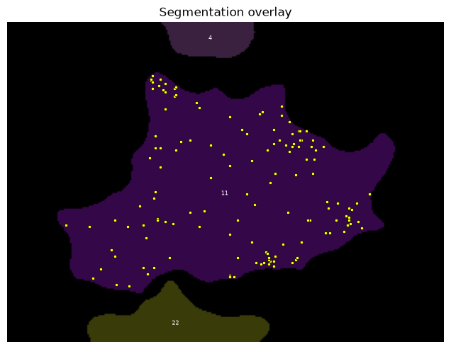
(<Figure size 800x587.05 with 1 Axes>,
<Axes: title={'center': 'Segmentation overlay'}>)
r_values, L_obs, L_sims = ripleys_l(spots, mask, cell_id=cell_id, n_repeats=200)
plt.plot(r_values, L_obs, color="black", label="observed")
plt.fill_between(
r_values,
np.percentile(L_sims, 2.5, axis=0),
np.percentile(L_sims, 97.5, axis=0),
alpha=0.3,
label="95% CSR envelope",
)
plt.axhline(0, color="grey", linestyle="--")
plt.xlabel("r (pixels)")
plt.ylabel("L(r) - r")
plt.legend()
<matplotlib.legend.Legend at 0x7fa2679352b0>
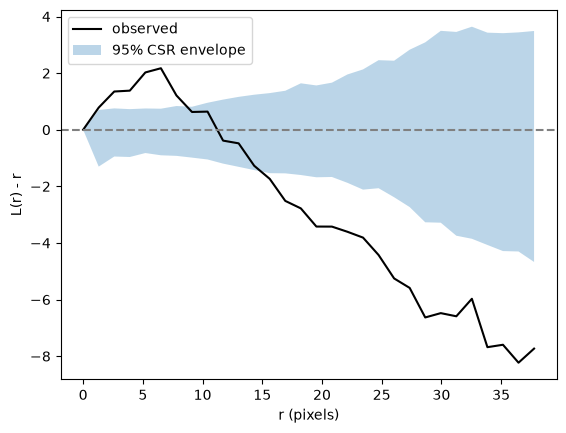
We observe clustering with scale 2-10 pixels, where the observed curve is above the 95% CSR envelope. Moreover, we see a corresponding dispersion from 15 pixels onward. This is because our random null distribution has the same number of points as the observed distribution.
Conclusion#
Here we have learned how to assess whether a spot pattern is clustered compared to random. Note the following:
The metric we used to measure clustering (nearest neighbor distance) was a choice. Other metrics, such as number of spots in a certain radius, distance to k nearest neighbors, and many others, are valid. Can you think of a spot pattern where the nearest neighbor distance is not an appropriate metric?
We chose a completely random spatial pattern as a null distribution. This was a choice. An equally valid option would have been to translate, rotate, etc., the spot pattern.
The formalism with which we defined spatial relationships (KDTree / Euclidean distance nearest neighbor search) was a choice. An equally valid approach would have been to divide space using a Voronoi diagram, or to use the distance between cell membranes.
All these choices need to be made with your scientific question in mind.